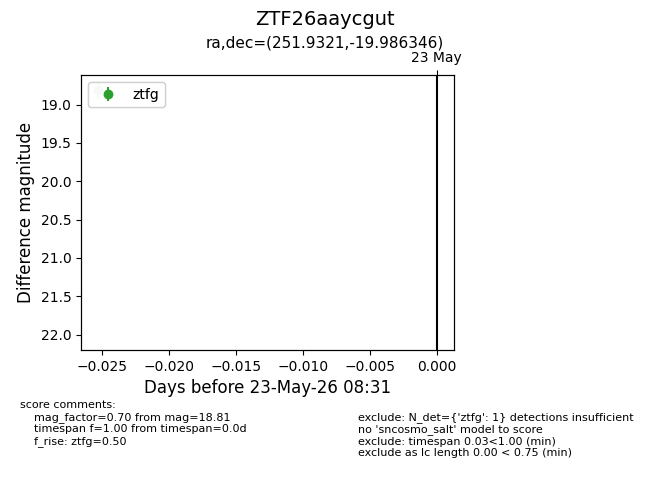
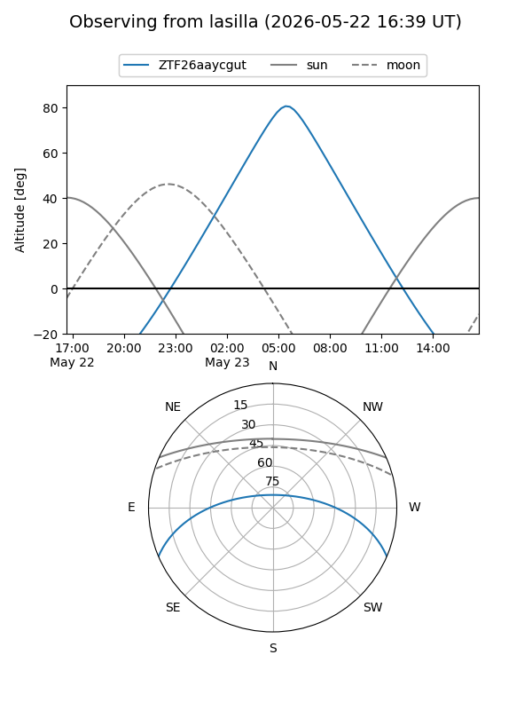
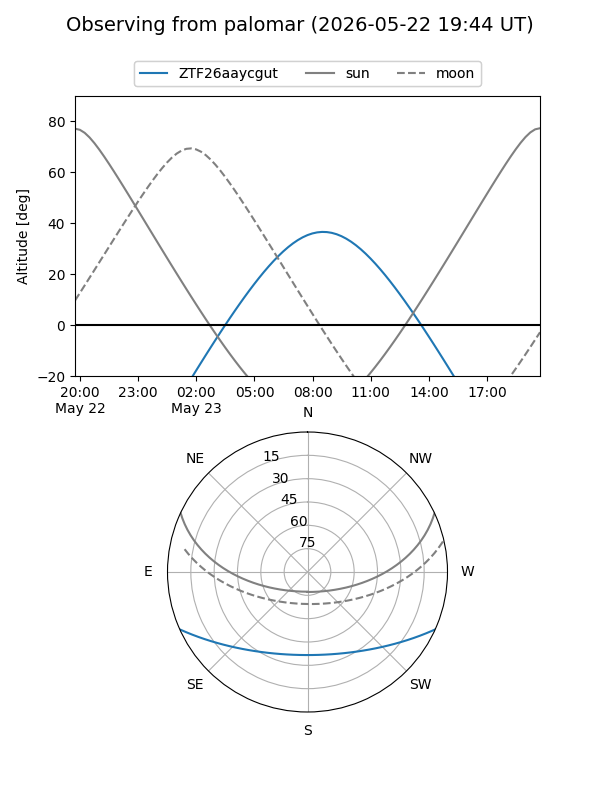

ZTF26aaycgut
Target ZTF26aaycgut at 2026-05-23 08:32
Aliases and brokers:
lsst-FINK: link
lsst-Lasair: link
lsst-ALeRCE: link
ztf-FINK: link
ztf-Lasair: link
ztf-ALeRCE: link
alt names
ZTF26aaycgut (ztf,fink_ztf)
Coordinates:
equatorial (ra, dec) = 251.9321,-19.98635
equatorial (HMS+DMS) = 16:47:43.70,-19:59:10.85
galactic (l, b) = (359.8865,+15.90297)
Flags:
Photometry:
last ztfg=18.81
1 ztfg detections
Lightcurve

Visibility


Additional plots